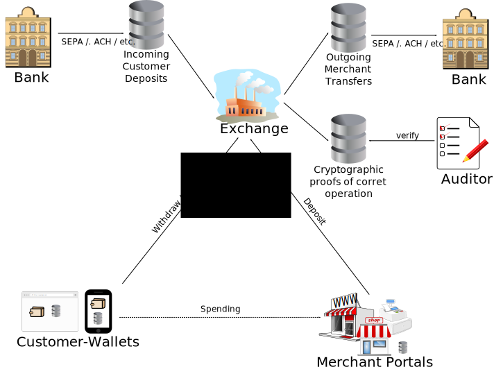

Taler is free software implementing an open protocol. Anybody is welcome to inspect our code and integrate our reference implementation into their applications. Different components of Taler are being made available under different licenses. The Affero GPLv3+ is used for the Mint, the LGPLv3+ is used for reference code demonstrating integration with merchant platforms, and licenses like Apache/Mozilla/GPLv3+ are used for wallets and related customer-facing software. We are open for constructive suggestions for maximizing the adoption of this libre payment platform.
Taler ist freie Software, welche ein offenes Protokoll implementiert. Der Code ist frei verfügbar und jeder ist eingeladen unsere Referenzimplementierung in eigene Projekte zu übernehmen. Die unterschiedlichen Komponenten Talers sind unter verschiedenen Lizenzen erhältlich. Die Münzanstalt fällt unter Affero GPLv3+, Referenzcode, welcher die Integration mit Händlerplattformen demonstriert, läuft unter LGPLv3+ und die Geldbörsen sowie weitere Software auf Seiten der Endkunden verwenden Apache-/Mozilla- ähnliche GPLv3+. Wir sind offen für konstruktive Vorschläge und freuen uns über Beiträge, welche zur weiten Verbreitung dieser freien Bezahlplattform führen.
Taler est un logiciel libre exécutant un protocol ouvert. Vous êtes les bienvenus pour inspecter notre code et intégrer nos applications référence dans vos applications. Différents composants de Taler sont disponibles sous plusieurs licences. L'Affero GPLv3+ est utilisé pour la monnaie, le LGPLv3+ est utilisé pour le code référence montrant l'intégration sur des plateformes machandes, et des licences comme Apache/Mozilla/GPLv3+ sont utilisées pour les portefeuilles et le lien client-logiciel orienté. Nous sommes ouverts à toute suggestion constructive pour exploiter au maximum cette plateforme de paiement libre.
Taler è un free software che utilizza un protocollo aperto. Chiunque è benvenuto per esaminare il nostro codice e integrare le nostre implementazioni di riferimento nelle loro applicazioni. Diversi componenti di Taler sono stati resi disponibili sotto diverse licenze. Affero GPLv3+ è usata per la Mint, LGPLv3+ per il codice di riferimento che mostra l'integrazione con la piattaforma del venditore, e licenze come Apache/Mozilla/GPLv3+ sono usate per i portafogli e i relativi software di interfaccia dei clienti. Siamo aperti a suggerimenti costruttivi per massimizzare l'adozione di questa piattaforma di pagamento free.
Taler is designed to work on the Internet. To ensure that Taler payments can work with restrictive network setups, Taler uses a RESTful protocol over HTTP or HTTPS. Taler's security does not depend upon the use of HTTPS, but obviously merchants may choose to offer HTTPS for consistency and because it generally is better for privacy compared to HTTP. Taler uses JSON to encode structure data, making it easy to integrate Taler with existing Web applications. Taler's protocol is documented in detail here.
Taler wurde zur Verwendung im Internet konzipiert. Um sicherzustellen, dass Bezahlvorgänge mit Taler auch in restriktiven Netzwerkumgebungen funktionieren können, verwendet Taler ein REST-basiertes Protokoll über HTTP oder HTTPS. Talers Sicherheit hängt nicht von der Verwendung von HTTPS ab, aber die Verwendung von HTTPS auf Seiten der Händler sollte aus Konsistenzgründen und aufgrund der besseren Privatsphäre, die HTTPS gegenüber HTTP bietet, erfolgen. Da Taler zur Kodierung von Datenstrukturen JSON verwendet, ist die Integration von Taler in existierende Webapplikationen sehr einfach. Das Taler-Protokoll ist im Detail hier dokumentiert.
Taler est conçu pour fonctionner sur Internet. Afin de s'asurer que les paiement Taler fonctionnent sur des installations réseaux restrictives, Taler utilise le protocole RESTful sur HTTP ou HTTPS. La sécurité Taler ne dépend pas de l'utilisation de HTTPS, mais naturellement les commerçants voudront choisir HTTPS pour l'uniformité et car c'est généralement meilleur pour la confidentialité comparé à HTTP. Taler utilise JSON pour coder les données structure, rendant Taler facile à intégrer avec des application Web existantes. Le protocole Taler est documenté en détail ici.
Taler è progettato per funzionare su Internet. Per assicurare che i pagamenti in Taler possano funzionare con configurazioni di rete ristrette, Taler usa un protocollo RESTful su HTTP o HTTPS. La sicurezza di Taler non dipende dall'uso di HTTPS, ma ovviamente i venditori possono scegliere di offrire HTTPS per maggior compattenza e perché è generalmente migliore per la privacy se paragonato a HTTP. Taler usa JSON per codificare i dati di struttura, rendendo facile integrare Taler con le già esistenti applicazioni web. Il protocollo usato da Taler è documentato nel dettaglio qui.
Taler is currently primarily developed by a research team at Inria and TU Munich. However, contributions from anyone are welcome. Our Git repositories can be cloned using the Git and HTTP access methods against git.taler.net with the name of the respective repository. A list of public repositories can be found in our GitWeb.
Taler wird aktuell hauptsächlich von einer Forschergruppe bei Inria und der Technischen Universität München entwickelt. Trotzdem sind Beiträge von jedem wilkommen. Unser Git-Repository kann man sowohl über Git als auch über HTTP klonen, indem man auf git.taler.net mit dem entsprechenden Repository-Namen zugreift. Eine Liste von öffentlichen Repositories ist in unserem GitWeb zu finden.
Taler est actuellement principalement développé par une équipe de recherche à Inria et TU Munich. Néanmoins, les contributions de tous sont les bienvenues. Notre Stockage Git peut être cloné en utilisant les méthodes d'accès Git et HTTP sur git.taler.net avec le nom du stockage respectif. Une liste des lieux de stockage publics se trouve sur notre GitWeb.
Attualmente Taler è principalmente sviluppato da un team di ricercatori di Inria e TU Munich. Comunque, sono ben accetti contributi da parte di chiunque. Le nostre repository di Git possono essere clonate applicando il metodo d'accesso di Git e HTTP su questo link git.taler.net, con il nome della corrispettiva repository. Una lista delle repository pubbiche può essere trovata al nostro GitWeb.
In addition to this website, the documented code and the API documentation, we are in the process of preparing a comprehensive design document which will be published here soon.
Zusätzlich zu dieser Webseite, dem dokumentierten Code und der API-Dokumentation bereiten wir ein umfassendes Design-Dokument vor, welches in Kürze hier verfügbar sein wird.
En supplément de ce site web, le documented code et l'API documentation, nous préparons un document exhaustif qui sera publié ici prochainement.
Oltre a questo sito, il codice documentato, e la documentazione API, siamo preparando un documento integrale di progettazione che sarà presto pubblicato qui.
We have a mailinglist for developer discussions. You can subscribe to it or read the list archive at http://lists.gnu.org/mailman/listinfo/taler.
Wir haben eine Mailingliste für Diskussionen mit den Entwicklern. Die Webseite der Liste zum eintragen als auch das Listenarchiv sind hier: http://lists.gnu.org/mailman/listinfo/taler.
Nous avons une liste pour le discours public des developers. On peut s'inscrire ou lire les archives à http://lists.gnu.org/mailman/listinfo/taler.
We have a mailinglist for developer discussions. You can subscribe to it or read the list archive at http://lists.gnu.org/mailman/listinfo/taler.
We have Buildbot automation tests to detect regressions and check for portability at buildbot.taler.net.
Wir automatisieren Tests mit Hilfe von Buildbot um Regressionen zu finden und den Code auf Portabilität zu testen. Die Ergebnisse sind unter buildbot.taler.net zu finden.
E' disponibile un Buildbot dedicato a test automatici per individuare regressioni e controllare la portabilità, alla pagina buildbot.taler.net.
We use LCOV to analyze the code coverage of our tests, the results are available at lcov.taler.net.
Wir benutzen LCOV um die Abdeckung unseres Codes durch unsere Tests zu verstehen. Die Ergebnisse sind unter lcov.taler.net zu finden.
I test effettuati sul software Taler subiscono la misurazione della loro "copertura" da LCOV; inoltre, tali risultati sono disponibili alla pagina lcov.taler.net.
We use Gauger for performance regression analysis of the Mint backend at gauger.taler.net.
Wir benutzen Gauger um Performanzprobleme der Datenbankbackends der Müzanstalt zu verstehen. Die Ergebnisse sind unter gauger.taler.net.
Le prestazioni della zecca (Mint) sono misurate attraverso Gauger, e i risultati disponibili alla pagina gauger.taler.net.
The Taler system consists of protocols executed among a number of actors with the help of Free Software as illustrated in the illustration on the right. Typical transactions involve the following steps:
Das Taler System besteht aus Protokollen die von verschiedenen Teilnehmern unter Verwendung von Freier Software ausgeführt werden. Die Illustration auf der rechten Seite veranschaulicht die folgenden für die Durchführung einer Transaktion typischen Schritte:
Taler usa software libero per realizzare i protocolli finalizzati alla comunicazione tra i vari partecipanti come illustrato nella figura a destra. La tipica transazione nel modello Taler si compone dei seguenti passaggi:
